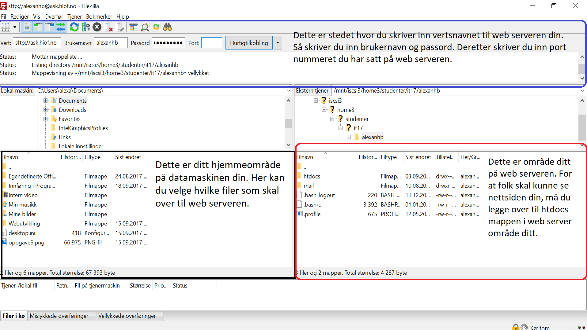

FTP er en forkortelse for File Transfer Protocol og er standard for å kunne overføre filer mellom to datamaskiner. Når du arbeider på en nettside og du har lyst til at andre personer skal kunne se denne nettsiden. Så må du legge over alle filer som tilhører nettsiden til en webserver, men for å kunne overføre disse filene så trenger du en FTP klient som f.eks Filezilla.
Blå: Dette er stedet hvor du skriver inn vertsnavnet til web serveren din. Så skriver du inn brukernavn og passord. Deretter skriver du inn port nummeret du har satt på web serveren.
Svart: Dette er ditt hjemmeområde på datamaskinen din. Her kan du velge hvilke filer som skal over til web serveren.
Rød: Dette er område ditt på web serveren. For at folk skal kunne se nettsiden din, må du legge over til htdocs mappen i web server område ditt.
